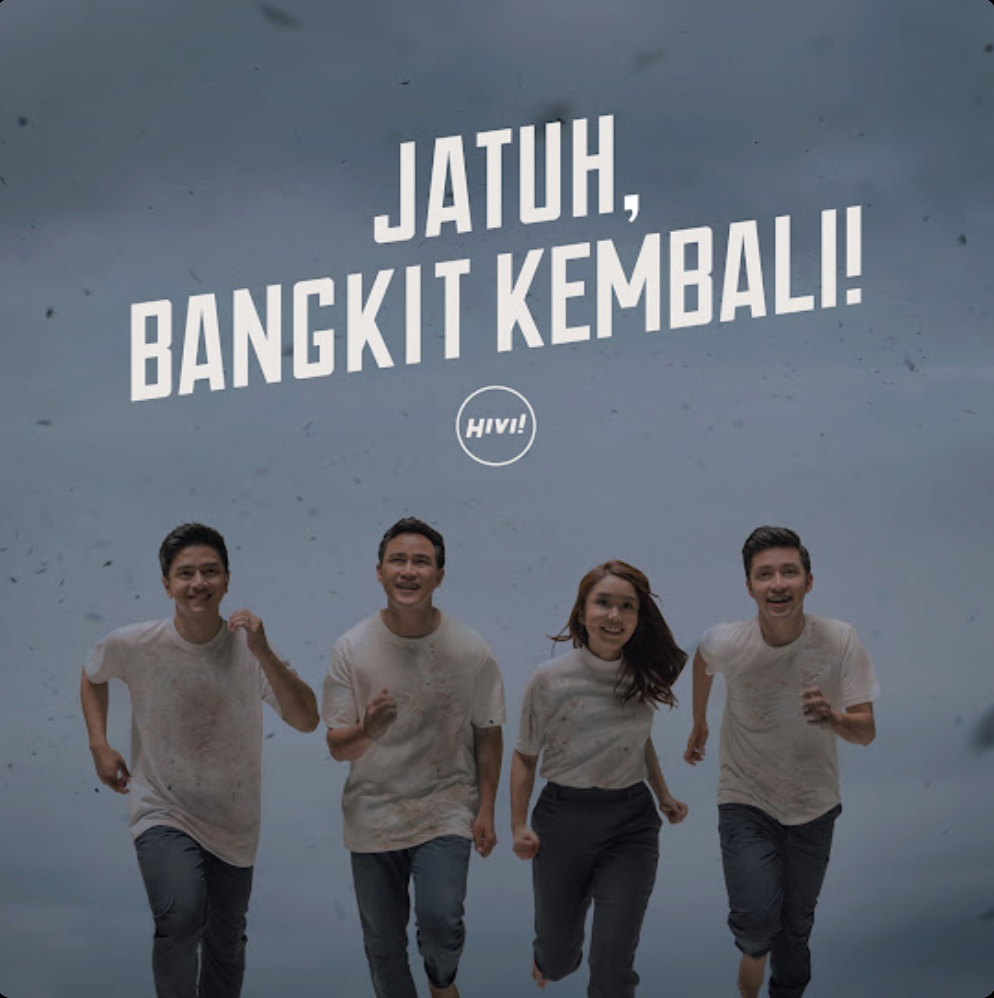

“Wishing you happiness, good health, and all your dreams come true.” 🤍
A Message For U
Hyy.. ciEe umurnya nambah satu, jadi seumuran nih kita sekarang, hihihi.
Doa untuk Rifka semoga Allah paring umur yang panjang, sehat dan waras selalu, hati yang selalu dipenuhi kebahagiaan dan kekuatan, diberikan rezeki yang banyak dan barokah. Semoga Allah mudahkan segala urusan Rifka, selalu diberikan keberuntungan di setiap langkah dan kesempatan, dikabulkan semua cita-cita dan doa Rifka, serta sukses dunia dan akhirat.
Semoga Rifka selalu dikelilingi oleh orang-orang baik, dikelilingi orang yang tulus mendukung semua langkah Rifka, selalu dalam penjagaan dan perlindungan Allah, serta tetap menjadi seorang yang tulus, ceria, dan selalu sayang sama keluarga dan sama orang-orang yang sayang dengan Rifka.
Alhamdulillah Jazakillahu Khoiroo yaa... sudah jadi manusia super hebat, super kuat, dan super positif yang selalu menebarkan energi baik di lingkungan PPPM, serta selalu bersemangat di setiap kegiatan PPPM. Tapi di balik senyum ceria Rifka di setiap hari, aku tauu... Rifka pasti tetap ada rasa sedih yang mendalam karena Bapak?ngga ada yang salah yaah dengan itu. Aku bukan mau mewajarkan semua yang Rifka rasakan, karena merasa sedih dan berduka kapan pun itu adalah hal yang sangat wajar rasanya pasti berat dan sakit banget.
Tapi percaya deh, keluarga dan terutama Bapak di sana pasti super duper bangga melihat Rifka yang sudah sejauh ini. Aku gatau Rifka suka cerita atau ngga, mereka pasti tau ada banyak sekali struggle yang Rifka lewati dalam perkuliahan di IPB maupun di kehidupan ini. Walau keliatannya baik-baik aja pasti berat ya rasanyaa..
Melihat Rifka yang tumbuh menjadi perempuan setangguh ini, semandiri ini, dan sebaik ini... itu bukti nyata kalau orang tua Rifka berhasil. Bapak berhasil mendidik anak perempuannya dengan luar biasa. Kebaikan dan senyuman Rifka adalah jejak cinta Bapak yang abadi.
Semangat terus yaa... aku ngga akan pernah capek bilang ini ke Rifka kalau butuh bantuan apa pun, atau mau cerita feel free yah..

Jatuh, Bangkit Kembali!
HIVI!
0:000:00
FROM MY HEART
A Little Story
you!
LANY
0:000:00
Maaf kalau kepanjangan karena beneran dari hati ini no edit ai
Mau sedikit bercerita (boong, banyak) tentang kamu dari sudut pandang aku hihi. Karena kalau first impression aku dah pernah cerita jadi aku mau cerita gimana awalnya dan apasih yang aku rasa hehe. Pertama kali aku ada rasa keknya di bulan Mei karena gada alasan juga sih, sering banget terucap entah di mulut atau di hati kata lucu dengan spontan setiap ada Rifka setiap interaksi sama Rifka. Titik awal aku rasa keknya aku beneran deh itu pas fesbud dan kamu nangis wkwkwk lucu tapi kaya owh wow selemah lembut itu ternyata Rifka.
Mau bilang lagi aku beneran gada maksud apapun beneran aku awalnya cuman mau tau lebih rifka cuman mau sedikit lebih deket dengan rifka makanya aku bilang sebenernya aku juga sedikit kurang peduli gimana rifka ke aku, yang aku tekenin ke diriku sendiri itu ya gaboleh sampe rifka ngerasa risih atau ga nyaman. Tapi ternyata..
Diawal padahal aku cuman suka doang tapi aku kaya banyak insecurenya dari semua hal yang kamu punya kaya aku ngerasa out of my league dan kaya aku rasa meskipun aku cuman suka tapi kaya gapantes aja, emang aneh sih si pemikir ini
Tapi berjalannya waktu ternyata aku malah berbuat hal aneh padahal dengan aku cuman ngeliat dari akun-akun kamu itu aku rasa cukup, tapi wkwkwk mencet-mencet lah atau lupa matin profile views dan ternyata aku tiba-tiba di follow akun bodong wkwk aku beneran langsung nyari tau dan berharap itu beneran rifka ternyata beneran suer aku seneng banget tapi yaudah kaya lah kok gitu aja sihh pas tiba-tiba berhenti wkwkwk, terus aku mutusin buat follow kamu juga karna kaya nyoba kali yah kali aja di follback ternyata di follback seneng bgt ada kali aku loncat-loncat (too much gasih za) trus awalnya bingung karna pasti canggung tapi yauda coba modus aja kalik.
Tapi ternyata kaya aku gabisa banget nyembunyiin ga jago dan malah confess secara halus? dan aku minta maaf juga misal diawal kayanya aku malah keliatan kaya ngasih mixed signals? makanya aku rasa kayanya gapapa deh confess dengan halus biar kamu ngerasa tenang dan yaudah ternyata udah kejadian.
Dan, yang ngga aku sangka ternyata kamu pun memiliki perasaan yang sama (?) wkwkwk aku beneran kagett dan aslinya ngga berharap padahal (halah kentut lu za emg denial bgt bocahnya) kaya direspon aja aku dah sangat bersyukur wkwkwk... makanya awalnya pun aku masih ga nyangka.
Makin kesini aku ngerasa sama-sama excited dan aku beneran seseneng itu lho, hari-hari aku jadi bener-bener kerasa beda bangett, aku diawal soalnya gamau terlalu percaya (maaf) karena aku kalau udah bersemangat kaya make hati banget makanya aku takut sakit ajah. makanya aku ngerasa secure banget ngobrol sama kamu aku ngerasa kaya ngga cuman seneng doang aku bisa cerita ke kamunya tapi semua hal aku bisa lakuin tapi aku masih gaenak kalau tiba-tiba aku malah ngeluapin emosi aku ngeluapin hal negatif aku ke kamu ya walaupun bukan ngarah ke kamu tapi aku tetep kaya yaallah kenapa ke rifka aku takutnya kamu ngelihat aku kaya gimana gitu.
Aku beneran seseneng itu tau kalau interaksi sama kamu di platform mana pun juga di real life dan kenapa aku lebih suka di tiktok karena aku ngerasa kamu disana kaya lebih lepas dan lebih lucu (?) di semuanya juga gitu sih tapi aku beneran takut kalau selain di tiktok gatau deh kenapa (?) kaya jujur ajaa takut kamu ga percaya, kalau aku kaya salting aku seneng aku excited aku sedih aku bener-bener di real life kaya gituu maksudnya ngga kubuat-buat cuman sekedar ketikan. Aku kaya berharap kamupun begitu wkwkw maksudnya aku bukan ngga percaya tapi malah justru aku percaya banget aku takut aja ternyata kamu ngga seexcited itu atau kaya bosen atau rasa excitednya pudar? kayaa padahal awalnya aku bodoamat yah tapi kenapa aku ngurusin hal begini maaf yah. Jadii kalau nanti dirasa begitu gapapaa kok bilang ajah karna aku rasa aku bakal sakit kalau tau kamu sebenernya nyembunyiin hal itu. Akupun bakal ngomong kok kalau sudah begitu tapi serius aku gapernah selama ini seneng bangettnya jadi aku terus berdoa supaya aku punya rasa gini terus.
Oiyah sama ini gatau yah kamu mikir begini atau ngga tapi aku kepikiran kamu mikir gini, soalnya aku pernah nanya mbafira soal friendlynya cowo itu gimana terus dia bener-bener ngasih aku pov dari cewe gimanah. Jadi aku mau ngasih tau aja aku ngga sefriendly yang kamu kira kok (loh sitau tuh) maksudku bagus sih friendly cuman aku masih tau batasan kok aku beneran ngerti gimana untuk ramah ke orang dan gimana aku interaksi ke kamu aduh gimana ya jelasinnya intinya aku tuh suka ngobrol sama kamu beda gitu perasaannya kalau ngobrol sama yang lain. Juga aku intens chatting sama kamu dan mbacinta atau mbafira doang, aku menganggap mbacinta dan mbafira adalah kakak perempuan yang amat sangat pengertian nan baik hati ya bukan mau menyingkirkan mas fatih tpi feelnya beda gitu dan gada romantisasi ke arah sana.. yaa jadi itusihh nahh karna aku dah klarif jadi nanti kalau ada yang menurut kamu janggal tanyain aja yaahhh...
OHH SAMA INI.. karna aku dah ngaku juga dan kamupun dah tau itu second akun tiktok aku dan kayanya udah liat repostannya yah? iyaa itu semua buat kamu kok ngga ada ke siapa-siapa, itu kaya curhat dan ada doa gituu sihh..